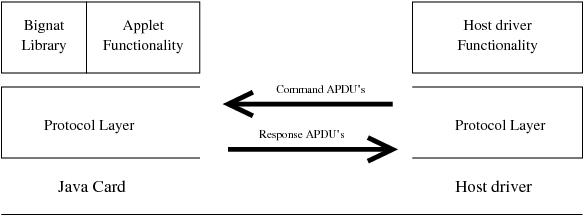
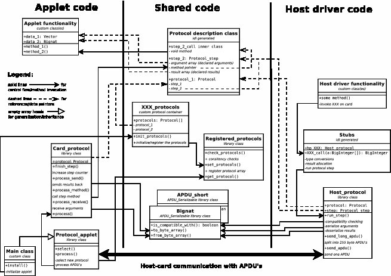
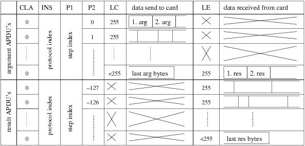

This document provides a high-level description of the different source code components of the OV-Chip 2.0 project and their interplay. It augments the rather low level javadoc generated documentation of the sources.
One aim of the OV-chip 2.0 project was to check whether and how
selective disclosure protocols can be implemented on Java Smart
Cards. The OV-chip 2.0 project is sponsored by the NLnet
foundation, see https://ovchip.cs.ru.nl/OV-chip_2.0 and
http://www.nlnet.nl/. The project started in July 2008. Until
spring 2009 applets and corresponding host driver code has been
developed to implement the RSA variants of Brands selective
disclosure protocols Brands00.
Apart from writing the applet code and host driver code itself it was also necessary to invest in general infrastructure and test and performance measurement code. For all the Java code a javadoc generated API documentation is available. This document complements this API documentation by explaining the structure of the code on a somewhat higher level.
The OV-chip source code releases contain prebuild API
documentation in the directory doc/generated.
To generate the API documentation it is necessary to configure
the sources. Therefore follow the steps in Section
Configuration or in the file src/README in the distribution.
After configuration execute make doc in the src directory.
Afterwards navigate to src/doc/generated/index.html.
As any Java Card application the OV-Chip sources consist of applet code, which is running on the Java Card, and host-driver code, which is running on the host to which the Java Card reader is attached. In this document I simply use the terms applet and host driver, respectively, to refer to both software pieces. Actually, the OV-Chip 2.0 repository contains several applets and host drivers, see Section Structure of the OV-chip Source Tree.
The applet must be written in the Java Card language, which is usually described as a subset of Standard Java. The applet is moreover limited to the Java Card Application Programming Interface (API), which is much simpler and smaller than the Standard Java API. The host driver is a standard Java program and can use any library available on the system. In this document Java always refers to Standard Java, for the card dialect I explicitly use the term Java Card.
The host driver controls the applet by sending Command APDU's to the card and receiving the card responses as Response APDU's. The card only performs computations when triggered by a Command APDU. After the Response APDU is sent back from the card to the host the computation on the card stops until the next Command APDU arrives.
For developing non-toy Java Card applets one has to deal with the following problems.
Although Java Card is a subset of Java, the API's and the programming conventions and requirements differ so much that one cannot share non-trivial code between the host and the card. Package and import declarations are different on the two platforms and even some standard methods are called differently (e.g., javacard.framework.Util.arrayCopyNonAtomic versus System.arraycopy). In the OV-Chip 2.0 project non-trivial portions of the code must be shared between the host and the card. Duplicating this code for just changing the imports is obviously not a solution. (For testing purposes, it is possible to compile applet and host driver code into one application that can be tested and debugged without card or emulator on the standard Java virtual machine with a normal debugger or, more trivially, by adding print statements into the applet code. Duplicating the applet code for this purpose would be absurd.)
Command and Response APDU's are limited to 255 bytes of data. Often, arguments and/or results of a method invocation on the card are longer and have to be sent with several APDU's.
The existing Java Card Remote Method Interface (RMI) is limited to one APDU, that is to 255 bytes for arguments and results, respectively. The Java Card RMI is therefore often not applicable. The existing libraries for sending APDU's work on byte arrays. However, for convenient programming one wishes a typed method interface.
A bit more OV-Chip 2.0 specific are the following two problems:
Cryptographic protocols typically consist of several steps, whose order must not be changed. The applet must maintain some state to protect itself against malicious host drivers that call the protocol steps in the wrong order.
There is no big integer library for programming cryptography on Java Card. Because of the limited resources on the card (e.g., applet deletion is often the only form of garbage collection) and the limitations in Java Card existing Java big integer libraries (e.g., java.lang.BigInteger or bouncy castle) cannot easily be ported.
This hacker guide to the OV-Chip 2.0 sources explains the solutions developed for these problems in the OV-Chip 2.0 project on a more abstract level. This guide should be considered as an abstract introduction to the javadoc generated documentation of the sources.
|  | Applet and host driver structure for the OV-Chip application. The communication layer is provided by the OV-Chip protocol layer, which provides a typed method interface for the components sitting on top of it. The Bignat library provides big integer functionality for the card. On the host the standard big integer library 'java.math.BigInteger' is used. |
The first problem (sharing code between host and card without duplication) is solved by preprocessing the real sources with cpp, the standard C preprocessor. The compilation system and the use of the preprocessor are covered in Section Compilation.
The last problem (big integers) is solved by a special purpose big integer library, the Bignat library, covered in Section The Bignat Library.
The remaining problems (stateful typed method invocation with arguments and results of arbitrary number and size) is solved by the OV-Chip 2.0 Java Card protocol layer, shortly protocol layer, described in the next section.
The mentioned problems and the developed solutions induced a particular structure of the applet and the host driver, see Figure applet-architecture.
In the OV-Chip sources there are a number of (outer) classes that only consist of static fields and whose constructor is protected to disable object creation. Such classes are called static classes in this document and in the javadoc generated documentation.
The notation util/APDU_short refers to the class APDU_short
that is defined in the file util/APDU_short.java in the src
subdirectory. When preprocessed and compiled for the host driver
it belongs to the package ds.ov2.util. When preprocessed and
compiled for an applet the package depends on the applet name.
The notation util/APDU_short.size refers to the field or method size of util/APDU_short.
A new structure of the repository is in the pipeline.
The following documents the current state and will soon change.
The source tree contains the following top-level directories.
Miscellaneous, unrelated code.
Contains small standalone programs that test specific features as well as small test applets with their host drivers. There is also a program that queries the card identification string.
javax.smartcardio.TerminalFactory providers
JcopEmulator and SunEmulator for the jcop emulator and the
Sun emulators cref and jcwde.
These providers complement the standard PC/SC provider for
talking to one of the mentioned emulators. Most host driver
code in the OV-chip sources checks at start-up for the presence
of these providers. When present they connect to the jcop
emulator by default. The Sun emulators or a real Java Card in a
PC/SC terminal can be selected via options (-sun and -c or
-r n).
The provider code is completely independent of the other OV-chip sources and documented separately.
In addition to the providers there is also wrapper for the Sun emulators that fixes the annoying terminate-on-disconnect problem of the Sun providers.
General tools. Contains, with decreasing importance:
Perl script idl.perl for transforming ASCII
text protocol descriptions into Java source code for using
these protocols with the OV-chip protocol layer. See Section
The IDL Compiler.
Standalone Java program to convert strings into hex applet ID's that are needed for the command line of the Java Card applet converter.
from Norman Feske. Tool for typesetting Usenet style ASCII files. Used for this Hackers guide. The gosh sources are in a cvs vendor branch to facilitate tracking new upstream releases.
An ocaml program
converter_errors to transform the error messages of the
Java Card applet converter into a standard format that is
recognized by Emacs.
An Ocaml program to dump the traffic that goes over a local port. Can be used to dump the communication with the Java Card emulators.
Base library for the OV-chip applets and host drivers.
Contains the code for the OV-chip protocol layer and provides some platform independent interfaces for some of the differences between standard Java and Java Card. Contains additionally some miscellaneous code that does not fit elsewhere.
The bignat library.
Contains the bignat library for manipulating long natural numbers on Java Card. Contains also some support classes for host drivers that provides a more convenient interface with standard Java BigInteger's. Finally, there is a test frame for testing the bignat library on a standard JVM.
Test and Performance applet and host driver.
The test applet tests and measures the performance of the OV-chip protocol layer and of various methods of the bignat library.
Frontoffice code of the OV-chip project.
Contains three applets that implement the RSA flavour of Brands
selective disclosure protocols. The first one, the
plain RSA applet, uses the RSA cipher on card to compute the
exponent and Montgomery multiplication to compute products. The
second one, the Montgomerizing RSA applet, computes all
powers and products with Montgomery multiplication on the Java
Card VM without crypto coprocessor. Its name stems from the
fact that it exchanges all data in Montgomerized form with the
host driver. The third one, the squaring RSA applet, uses the
RSA cipher for computing both, powers and products. Its name is
inspired by the equation used to compute products with
exponentiation: a * b = ((a + b)^2 - a^2 - b^2)/2.
The directory additionally contains the necessary host driver code that implements key generation, applet installation and personalization and the host side of the protocols. There is also a standalone program that can run and measure arbitrary rounds of the protocol.
Presentation GUI for the RSA applets.
The GUI imitates different locations that are important in the OV-chip 2.0 context: The office of the service provider, a resigning automaton and an entry gate.
Documentation.
Contains this Hackers guide and some necessary data for
generating the javadoc API documentation. The API documentation
is generated in the Makefile in src. When built the API
documentation is located in the subdirectory generated.
Elliptic cure test code.
(Mostly) third party library code.
Contains the bouncy castle library in a vendor branch with generalizations for elliptic curves.
Schnorr's identification protocol.
First test applet that has been implemented in the project to gain experience with the Java Card platform.
Build directory for the javadoc API documentation. Will be created when the API documentation is generated.
The sources in the subdirectories util, bignat, test,
front and gui do not use standard Java compilation. For
compilation the Makefile's in these directories construct
(possibly several) Java conform source trees in the subdirectory
_java_build_dir on the fly. The Makefile of src/front, for
instance, will create the subdirectories plain_rsa_card,
mont_rsa_card, rsa_card_test and rsa_host_test inside
src/front/_java_build_dir. Each of these subdirectories will
contain a complete source tree for, respectively, the plain RSA
applet, the Montgomerizing RSA applet, the standalone host driver
and the host-only test frame. To populate these source trees the
original sources, from e.g., src/util, are copied and
preprocessed by cpp and sed. See Section Compilation for
details on the build system.
Because of patent issues the public releases of the OV-chip
sources are missing a number of method bodies. These omissions
prevent the compilation of the OV-chip applets in the front
directory. The algorithms that are implemented in these method
bodies are extensively described in ovchip09 and Brands00 and
the API documentation. It should therefore not be too hard to
rewrite the missing methods.
The test applet in the test subdirectory and the Bignat
test frame are not affected by patent issues. They can always be
build and run.
The requirements for compiling and the configuration of the code are described in the first two subsections. The programs that one can experiment with are described in section Running below.
Compilation requires Java 1.6 because the javax.smartcardio
package is used. A number of third party packages are required or
optionally needed. Without the required packages only this
Hackers Guide can be compiled into a printable version
(make guide in src). With only the required packages one can
build the main applets, the host drivers and run them on real Java
Cards (make core in src). With the optional packages one can
run the applets in one of the emulators (make all in src). If
only some of the additional packages are available it might be
possible to build more that what make core does. This has to be
done on a per-subdirectory basis then.
for compiling applets.
Get it from
http://java.sun.com/javacard/downloads
from Wojciech Mostowski. For installing and deleting applets. The global platform manager will soon be released as open source. Until then it is included in the OV-chip releases as gpm.jar.
If you got this OV-chip source tree as a cvs checkout from the sospublic repository, then you have to checkout and build the Global platform manager yourself. Do
svn co svn+ssh://username@solo.science.ru.nl/vol/sos/repos
/svn/sospublic/woj/GlobalPlatformManager
(the command must be on one line without space between repos
and /svn). Change to GlobalPlatformManager/src and do 'make
jar' to produce gpm.jar.
The jcop tools (which are not any longer distributed by NXP) contain a nice Java Card emulator, which can be used to test and run all applets of this repository.
Needed for some non-essential tools.
Needed for the SunEmulator provider
that can talk to the SUN emulators. Further, there is a 2.2.2
test applet in src/misc/test_jc222, which checks for the presence
of the package javacardx.framework.math.BigNumber on the card.
Until somebody writes a neat configuration script, configuration
has to be done by editing a makefile. For that copy
src/ConfigMakefile.in to src/ConfigMakefile and fill the
variable definitions therein appropriately. All makefiles include
ConfigMakefile to access the configuration.
Additionally all makefiles optionally include a file
LocalMakefile. Optional inclusion (with -include) here means
that in case LocalMakefile is not present it is treated as it were
empty. The LocalMakefile can be used to override the
configuration on a per-directory basis, to add additional
goals, or to set the default goal.
This section describes the compilation system used for the
OV-chip applet and host driver sources, that is for the
directories src/util, src/bignat, src/test, src/front and
src/gui. All other directories use the default Java system,
were .java files are compiled in the same directory into
.class files and the application is started with a shell script
that gathers all the arguments for the java executable.
To achieve platform independence and in order to select
variations of the code, many source files must be preprocessed
with the C preprocessor cpp. As a rule of thumb, code for the
card is always preprocessed, while code that runs solely on the
host does only need preprocessing under special circumstances.
(For simplicity the Makefile's pipe all files through cpp, but
those which do not need preprocessing could just as well be
copied.) The javadoc API documentation list for every class which
cpp directives are used in the sources of that class. A list of
all cpp directives is in src/doc/generated/index.html (after
the API documentation has been generated).
The preprocessor inserts line directives in its output. Therefore
the files must be further processed with the stream editor sed
to push the line directives into comments.
The cpp preprocessing is controlled with a config file that is
'#include''d in all files that need preprocessing. On the basis
of certain top-level directives the config file enables and
defines other directives. This way cpp invocations in the
Makefiles contain no more than one hard-coded -D switch. For
example for building the plain RSA applet the make-goal applet
causes the source files to be preprocessed with
-DOV_PLAIN_RSA_TEST_APPLET. The directive
OV_PLAIN_RSA_TEST_APPLET is only used in src/front/config to
define the right set of directives.
Depending on the preprocessor directives one source file might
give rise to different incompatible Java classes. Building jar
files would therefore be rather complicated. Every application
and applet is therefore compiled in its own complete source tree
that is generated by the Makefile on the fly. For instance, the
file util/APDU_Serializable is necessary in both, the plain RSA
applet and the host driver. When building these two things, the
makefile src/front/Makefile first preprocesses
util/APDU_Serializable with -DOV_PLAIN_RSA_TEST_APPLET and
copies the result to _java_build_dir/plain_rsa_card/util/ds_ov2_prsa,
where javac can compile it. Later the same file is preprocessed
with -DHOST_TESTFRAME and the result is copied to
_java_build_dir/rsa_card_test/ds/ov2/util, where it is compiled
again.
Because of this copy process the makefiles have to list all source files that are needed for a given goal. This is a bit inconvenient, because it means that one usually has to change several makefiles when one source file is added, see Section Howto add a new source file.
As stated already in Section
Structure of the OV-chip Source Tree all compilation is done in
a temporary _java_build_dir subdirectory, which contains one
subdirectory for every build goal. For instance
_java_build_dir/plain_rsa_card inside src/front for the plain
RSA applet. Inside this goal-specific build directory more
subdirectories are created as follows.
For normal applications (that run on the standard JVM)
everything is as expected. These applications are declared to be
in a third-level package inside ds.ov2, for instance
ds.ov2.bignat for the bignat test frame. Therefore the
goal-specific build directory contains a subdirectory ds/ov2
with further subdirectories util, bignat and so on, as needed.
Source files from src/util are preprocessed into ds/ov2/util,
as one would expect.
Applets are placed into a top-level package, for instance
ds_ov2_prsa for the plain RSA applet. So the Java compiler
expects all sources in a subdirectory with the name
ds_ov2_prsa. The makefile, however, must keep track whether a
given source files comes from src/util or src/bignat or
somewhere else. Therefore the goal-specific build directory
contains one subdirectory, say front/ds_ov2_prsa. Additionally
there are symbolic links util, bignat, and so on, that all
point to the front directory. This has the following effect:
For the java compiler all sources lay in one
directory. The makefile however, can for instance distinguish
between util/ds_ov2_prsa/APDU_Serializable and
bignat/ds_ov2_prsa/Bignat in order to retrieve
APDU_Serializable from src/util and Bignat from
src/bignat.
In order to compile an applet or a normal application the following steps are performed by the makefile.
Create the needed directory structure
inside _java_build_dir, as explained before.
Create a preprocessed .prejava file with
line number directives.
First the do-not-edit-warning from src/not-edit-warning.java
is copied into the final location. Then the source file is
piped through cpp and the output is appended to the final
location. The cpp command line receives one -D switch with
the top-level directive. Some goals, for instance the host
driver of the test applet are build without a top-level
directive.
Additional directives can be specified in the CPPFLAGS
variable. This is empty by default, but could for instance set
to -DOPT_SPECIAL_SQUARE to compile the bignat library with
the special square optimization, see Section
Variations of the sources.
Push the line directives into comments and
make the resulting .java file read-only to prevent accidental
changes of generated files.
with javac to produce .class files.
for applets only.
The applets must of course be loaded onto a Java Card or into an
emulator before they can run. Note that the SUN emulators are
only good enough for some test applets from src/misc because
they lack an RSA cipher. The host driver of the test applet and
the front office host driver are linked with Wojciech Mostowski's
global platform manager and can therefore install their applets
themselves. The test host driver checks the applet creation date
and some global parameter and automatically reinstalls the test
applet on any mismatch. The options -reinstall and
-keep-applet force a different behavior. The front
office host driver always reinstalls the selected applet.
Because starting normal Java applications is somewhat difficult
there are shell scripts that build the right java command line.
Sometimes these shell scripts depend on the configuration and are
therefore created from by the makefile from corresponding .in
files.
Apart from the presentation GUI in src/gui all these
applications are non-interactive command line tools that are
controlled with command line switches. They all support the
switches -h, -help and –help.
There are the following scripts for running different parts of the OV-chip code.
The bignat test frame. This test frame can test several aspects of the bignat library on a conventional JVM (i.e., running on a PC and not on a Java Card) and evaluate their performance. For more documentation about the bignat test frame see the javadoc documentation for bignat/Testbignat.
Measure the performance of the bignat test frame for different configurations against the standard BigInteger library. This is a shell script that recompiles and runs the bignat test frame several times in different configurations.
The test host driver. This host driver gives access to the test applet. It can be used to check the functionality of the bignat library on Java Card and to measure its performance. For more information about using the test applet see the javadoc documentation of test/Test_host.
Install the test applet on a card or the
jcop emulator. Not really needed any more, because of the
automatic reinstallation done by the test host driver. Assumes gpm to
call the global platform manager. The most common installation
parameters are hard coded in this script, which is a potential
pitfall, because they have to agree with the values hard coded
in test/State.
The front office test frame that (re-)installs and communicates with one of the RSA applets on a card or emulator. For more documentation see the javadoc documentation of front/Card_testframe.
The front office host test frame that runs host driver and the plain RSA applet code in one application on the normal JVM. For more documentation see the javadoc documentation of front/Host_testframe.
The front office host test frame that runs host driver and the Montgomerizing applet code in one application on the normal JVM. For more documentation see the javadoc documentation of front/Host_testframe.
The front office host test frame that runs host driver and the squaring applet code in one application on the normal JVM. For more documentation see the javadoc documentation of front/Host_testframe.
Start the presentation GUI. The presentation GUI is mostly self explaining and displays tool-tip help where not.
Issue the card identification APDU and display the result.
Generic misc host driver, to be used with the RSA
test applet in misc/test_rsa and the 2.2.2 test applet in
misc/test_jc222.
Host driver for the SHA-1 test applet.
Host applet for the int/short performance
applet in misc/test_int.
Run a given applet inside the cref
emulator inside owrapper. (The owrapper tool keeps the
connection to the emulator open, such that it does not die when
the host driver disconnects, see Section
Structure of the OV-chip Source Tree.)
Ditto for the jcwde emulator.
* /gpm-installInstall one of the applets, using the global platform manager through an assumed gpm executable.
Computes the documentation coverage, see
src/doc/count.
Technically the OV-Chip protocol layer is a patchwork, consisting of a library (of Java classes), hand-written, and generated code. The protocol layer is the low-level communication layer between host driver and applet, see Figure applet-architecture. Its respective parts run inside the host driver and the applet. Essential parts of the code are shared between host driver and applet. The hand-written and generated code are applet specific. The code generation is done by an IDL compiler (written in perl, because I felts here-documents might be useful). The IDL compiler takes protocol files as input and generates the so-called protocol descriptions and two versions of the host stub code. The first version, the real stub code, is for communicating with the applet. The second version, the test stub code is for use in test frames, see Section Host only Test Frame.
A central notion for the protocol layer is that of a protocol. A protocol is a relatively independent piece of functionality of an applet. Typically an applet implements several protocols that can (more or less) arbitrarily selected from the host driver. In general the functionality of one protocol requires several message pairs to be send between host driver and the applet. Usually, for each message pair one method of the applet is run on the card.
For example, the current implementation of the OV-Chip 2.0 applet implements 4 protocols:
For technical reasons (see Section Initialization) applet initialisation and personalisation is split into two protocols, the first one for allocating all data structures on the card and the second one for initialising those data structures. These two protocols both consist just of one step.
To change its blinding and to obtain a signature of the new blinded attribute expression three steps are necessary. In the first step the applet sends its current blinded attribute expression together with the signature to the host (which will then check the validity of the signature). In the second step the card computes the hash and in the third step the signature is completed.
The protocol for entry gates consists of two steps. In the first the card commits to its blinded attribute expression and in the second one it responds to the challenge of the host.
For both, the resign and entry gate protocols the steps must be executed in the right order and it is not permitted to interleave the protocols.
In the context of the OV-Chip protocol layer a protocol is
defined as a tuple, consisting of a protocol identification
number and an array of protocol steps, see class
util/Protocol. Each protocol step consists of a method together
with one array of argument objects and one array of result
objects, see class util/Protocol_step. The protocol
identification number is used to select the protocol when talking
to the card, it is not fixed for a given protocol but determined
during initialisation, see Section Initialization. The method
of a protocol step is a method of the applet. To execute a
protocol step, first the arguments are transferred to the card,
then the method is executed on the card and finally, the results
are copied back to the host. Both, transferring arguments and
results, can require several APDU's if the respective data size
exceeds 255 bytes (which happens very often for the OV-Chip
protocols).
The OV-Chip 2.0 protocol layer implements the following features.
Remote method invocation on the card with transferring arguments and results of arbitrary size.
Enforcing the order of the single steps of each protocol.
Data type conversion from host to card data types and back.
Measuring the duration of methods on the card.
Provide a simple test environment for applet code.
Lets look closer at the second step of the entry gate protocol.
Its signature is described in the file
front/RSA_card_protocol.id as follows.
step respond: data.gamma_beta_3 -> data.remainders, data.result
call card.respond_to_challenge()
Here step is a keyword that introduces a protocol step
declaration (of name respond) and call is the keyword that
defines the method belonging to this step.
The Variable data refers to an instance of class front/RSA_data,
which contains (among others) two bignat/Bignat fields
gamma_beta_3 and result and one bignat/Vector field
remainders. The variable card refers to an instance of class
front/RSA_card, which contains a method respond_to_challenge.
The method front/RSA_card_protocol_stubs.respond_call
represents the top-level interface of this protocol step on the host
side.
public Respond_result respond_call(CardChannel _cc,
BigInteger _data_gamma_beta_3_host_arg)
throws CardException
(Note that the class front/RSA_card_protocol_stubs is generated
by the IDL compiler and therefore not present in the vanilla
sources.) The inner class Respond_result is a record with the
following three elements.
public final long duration;
public final Host_vector data_remainders;
public final BigInteger data_result;
The first field contains the duration that it takes to execute
the step on the card, see Section Measuring Step Duration. The
other two fields contain the declared results of the step. Note
the type differences between the declaration of the respond
step and the respond_call method. Note also how the two results
of the step are wrapped in a record.
The method that is called on the card for this protocol step has the following signature (see front/RSA_card).
public void respond_to_challenge()
Note that the arguments and results do not really appear as arguments and results here. Because there is usually no garbage collector on the card, the objects that are used as arguments and results must be statically allocated. The method can therefore access arguments and results via their static references.
The stub method respond_call performs the following actions,
when called from the host driver.
It wraps the actual gamma_beta_3 argument into an
bignat/APDU_BigInteger object and checks compatibility with the
declared argument.
The wrapping is necessary, because only objects with the util/APDU_Serializable interface can be sent to or received from the card. The big integers of type bignat/Bignat are static in size. The compatibility check therefore ensures that the actual argument (which is a dynamically sized BigInteger) fits into the size of the declared argument.
The actual argument is converted to an array of bytes and sent to the card in as many APDU's as necessary.
On the card, the meta information in the received APDU's is decoded to determine that the host wishes to execute the second step of the entry-gate protocol now. It is then checked whether the protocol layer in the applet is in the right state in order to execute this step (which is only the case if the first step has just been finished with the preceding APDU).
The applet protocol layer copies the data from the argument APDU's into the statically allocated argument objects.
After the last argument byte has been received the method
respond_to_challenge is called on the card.
After completion of the method respond_to_challenge the data
in the statically allocated result objects is sent in response
APDU's to the host. The protocol layer inside the host driver
has to issue sufficiently many APDU's to enable the card to
send all result data back.
Before sending the last response APDU, the protocol layer in the applet increases as last action the protocol-step counter. Thereby it notices that the entry-gate protocol has been finished and it therefore resets the current protocol pointer on the card. The host driver can then select a different protocol with the next APDU.
On the host the received data is copied into freshly allocated
objects, the measurement of the duration of the step is
completed and a freshly allocated Respond_result record is
filled, which is then returned as result of the respond_call
method.
|  | Components of the OV-Chip protocol layer. |
There are several components in the protocol layer both on the host and on the card that have to play together to achieve the just described behavior. In particular:
The util/APDU_Serializable interface and its implementations for converting typed data to and from byte arrays.
On the card an instances of util/Protocol_applet, util/Registered_protocols and util/Card_protocol implement together the protocol layer. These classes are instantiated and parametrized with typically two applet specific classes. For the plain RSA applet these are front/RSA_applet and front/Front_protocols. The first one, front/RSA_applet, is the main applet class. It extends util/Protocol_applet and provides the applet installation method. The second one, front/Front_protocols, creates an array containing all supported protocols. See Sections The Protocol data structure: util/Protocol and util/Protocol_step – Card Part: The Applet Class and util/Card_protocol for further explanations.
Inside the host driver there is one instance of util/Host_protocol for each protocol step. Its method run_step performs the compatibility checks, the encoding of the arguments into possibly several command APDU's and the decoding of the results from possibly several response APDU's.
The stub code, which is generated by the IDL compiler, is part
of the host driver. The stub code initialises one
util/Host_protocol instance for each step. It further defines
one xxx_call method for each step that wrapps the actual
arguments into APDU_Serializable's, allocates the return value
objects and measures time. (Time measurements are only part of
the generated stub code if explicitly requested with the key
phrase measure time in the protocol description file.)
The class front/Front_protocols and instances of the protocol description classes are part of both, the applet and the host driver. Together, they form the data structure describing all protocols with their steps and their respective arguments and results. The parts mentioned in the preceding items access this data structure on various occasions.
Figure components shows these components together with the control flow and the data dependencies. The following sections elaborate on these components.
Protocols, protocol steps, their arguments and results are
described in the protocol files (with suffix .id). The IDL
compiler reads the protocol files and generates (among others)
protocol description classes with suffix _description (in files
_description.java). The description classes contain one
instance of util/Protocol_step for each protocol step. Each
protocol-step instance contains one array of argument objects and
one array of result objects. These arrays are of type
util/APDU_Serializable, see Section
util/APDU_Serializable: Convert Typed Objects to and from Byte Arrays.
The argument and result objects in these arrays are called the
declared arguments and the declared results, respectively.
(These declared arguments and results are textually identical
with those appearing in the input files of the IDL compiler.)
The description class is part of the applet and the host driver. In the applet the declared arguments and results are directly used during the data transfer. Incoming argument data is copied into the declared arguments and the methods that run on the card access their arguments there. Similarly for the declared return values on the card.
The declared arguments that appear in the host drivers copy of the description class are only used for compatibility checking, see Section Compatibility between card and host data types. The arguments that are passed into the stub methods and the results that the stub methods return are completely different objects. These arguments and results of the stub methods are called the actual arguments and the actual results, respectively.
Command and Respond APDU's only transfer bytes. The conversion from typed data to and from byte arrays are achieved via the methods to_byte_array and from_byte_array of the interface util/APDU_Serializable. Strictly speaking, all arguments and results of all protocol steps must implement the util/APDU_Serializable interface. However, to make live easier, the IDL compiler knows how certain types can be wrapped into an APDU_Serializable interface. For instance, on the host driver side arguments of type BigInteger are wrapped into bignat/APDU_BigInteger instances by the generated stub code. For results the stub code internally allocates APDU_BigInteger's but returns only their value field (which is of type BigInteger) to the outside.
The term serialisation is used here and in the javadoc documentation to refer to the process of converting a typed object into a byte array. The term deserialisation refers to the reverse process of converting a byte array into a type object.
The general idea is that serialisation/deserialisation is only possible between objects of the same type. However, because of the limitations of the Java Card environment, the Java Card data types are often rather inconvenient to use. Therefore, careful cheating about the actual types is permitted. The only point where the types of the declared and the actual arguments are compared is the compatibility check performed in the host driver. For the compatibility check the method is_compatible_with is invoked on the declared argument with the actual argument as parameter. All type checking is therefore in the responsibility of the implementor or the implementation of the APDU_Serializable interface.
Although it is against intuition, the compatibility relation that
the is_compatible_with method implements need not be symmetric.
That is, the result of x.is_compatible_with(y) can be different
from y.is_compatible_with(x).
The compatibility check is always invoked on the declared arguments with the actual arguments as parameter. The compatibility check is also performed on the results by invoking is_compatible_with on the declared result with the freshly allocated actual result object as parameter. Checking the results is a left-over from the time before the IDL compiler. Nowadays the result checks can only fail because of bugs in the IDL compiler.
The compatibility check does not only have to check the type, but also that the actual argument fits in size into the object that is used as argument on the card.
The fact that the method is_compatible_with is only invoked on the declared arguments and results is used to ensure that certain host-only data types that implement the APDU_Serializable interface cannot appear in argument or result declarations of protocol steps. For instance, bignat/APDU_BigInteger implements the APDU_Serializable interface but it is only wrapping a BigInteger and should therefore never appear in the interface of a protocol step. To ensure this the method is_compatible_with of APDU_BigInteger returns false on all arguments, making any compatibility check fail.
The size of a serialisable data type is the length of the byte array that it occupies. In the OV-Chip context the size of most arguments depends on the key length of the RSA key that is used. That RSA key is only generated once in the lifetime of the whole system, therefore arguments and results never change their size. This observation was used to simplify the whole protocol layer.
The size of all arguments and result objects must not change. The size must further not depend on the current state of the particular argument or result. The size can be different for different objects of the same type.
However, for performance measurements in the test applet this rule is broken and the size of arguments and results of certain protocol steps is changed there. The code that accomplishes that is guarded with one of the TESTFRAME cpp directives and is therefore only available in test frames. Changing the size of an argument or result requires that certain parts of the protocol layer get reinitialised, see Section Changing the Size of Arguments or Results.
Any data type with size larger than 1 byte must anticipate the fact that it is split over two APDU's. Further, because the APDU buffer on the card is only guaranteed to be 32 bytes long, much more than 2 calls to to_byte_array or from_byte_array might be necessary to (de-)serialise one object.
When (de-)serialisation is split across many calls of
to_byte_array or from_byte_array the context who calls these
methods remembers how many bytes have been (de-)serialised (so
the serialisation methods do not have to remember that themselves).
The number of bytes that have been (de-)serialised in preceding
calls is passed in the second argument this_index.
(De-)serialisation must continue at the byte with index
this_index.
There is one peculiarity about the return value of the two methods to_byte_array and from_byte_array. In principle they return the number of bytes (de-)serialised in the current call. There is an exception in order to distinguish the case where the available buffer space is just sufficient to finish (de-)serialisation, from the case, where the available buffer space does not suffice (and (de-)serialisation must continue in subsequent calls to the same method). The exception applies to the case where n bytes of buffer space are available and exactly n further bytes are needed to finish (de-)serialisation. In this case (de-)serialisation must be finished in this call and the return value must be n + 1'.
|  | APDU structure of the OV-chip protocol layer. The figure shows the APDU's exchanged for one protocol step, that is for calling one method on the card. A cross means that the respective field is not present in the APDU. |
The size of arguments and results of all protocol step does never change (see Section Serialisation Size). Therefore the OV-Chip protocol layer does not use a length-value encoding. The first byte of the second argument directly follows the last byte of the first argument in the payload of some APDU. Apart from the data of the serialised arguments the command APDU's also carry some meta information in the INS, P1 and P2 bytes. With one exception all the meta information is only used for error checking on the card. The exception is the first APDU of the first step of a newly selected protocol. There the card uses the INS byte to determine the protocol identification number of the new protocol.
The structure of the APDU's exchanged for one method step is shown in Figure long-apdu.
The header bytes of the command APDU's are used as follows.
always 0x00
Protocol identification number
Step number
Batch. The batch counts the APDU's in one step. For arguments
it counts upwards from zero and for results it counts upwards
from -128 (i.e., 0x80), that is, upwards from zero, but with
the first bit set.
For all APDU's exchanged by the protocol layer the status 0x9000
is used to signal successful completion. Other response status
words signal an error, see Section Response Status.
Let the n be the total size (in bytes) of all arguments of some fixed protocol step. To send the arguments to the card n / 255
+ 1 argument APDU's are used (here / denotes integer division, i.e., 509 / 255 = 1). All these argument APDU's have identical INS and P1 bytes, namely the protocol identification number and the index of the step (i.e., 1 for the second step). The P2 byte (the batch) counts the argument APDU's from 0 to n / 255. The protocol layer in the applet always checks the INS, P1 and P2 values and aborts the protocol execution with the appropriate status, see Section Response Status.
The first n / 255 argument APDU's contain 255 bytes of data. The first data byte of the first argument APDU is the first byte of the serialization of the first argument. The remaining bytes of the first argument and the remaining arguments follow without gap.
For the first n / 255 argument APDU's the applet only copies
their data into the declared arguments by invoking
from_byte_array. The expected response length for these
argument APDU's is zero, that is, the LE byte is omitted in these
argument APDU's. When the applet receives the last argument APDU
it finishes the deserialisation of the arguments and then
immediately calls the action method of this protocol step. The
response APDU of the last argument APDU is already used to send
back the first part of the results. Therefore, the expected
response length of the last argument APDU is set to the total
size of all results or to 255, if that exceeds 255.
Let now m denote the total size of all results of this very protocol step. Then m / 255 + 1 response APDU's are necessary to send all results back to the host driver. Some cards can send a response of 256 data bytes, even if the expected response length (the LE byte) is set to 255. For these cards m / 256 + 1 response APDU's are necessary. The first response APDU is already sent as response to the last argument APDU. After receiving that the host driver sends m / 255 (or m / 256) result APDU's.
The INS and P1 byte of the result APDU's are identical to the argument APDU's: They contain the protocol identification number and the step index. The P2 byte (the batch) counts upwards from
-127 (0x81). So the first result APDU has batch -127 (0x81), the
second -126 (0x82), the third -125 (0x83), and so on. The
response APDU corresponding to batch -128 (0x80) is contained in
the last argument APDU. Therefore the batch value -128 (0x80)
does never appear.
None of the result APDU's transfers data bytes to the card. Therefore the LC byte (the length of the data field in the command APDU) is not present in all those APDU's. The expected response length (the LE byte) is set to 255, except for the last result APDU, where it is sent to the number of remaining bytes.
Apart from copying the results into the response APDU, the applet performs no other action for any of the result APDU's.
After the last result APDU the host driver must directly send the first argument APDU of the next protocol step of the same protocol. The protocol layer in the applet will check that the P1 byte increases accordingly.
Only when the last protocol step of the current protocol has been completed, the host driver might select a new protocol by sending the first argument APDU of the first step of the newly selected protocol. Thus there is no separate protocol selection APDU.
The number of protocols that applets supports is limited to
112, because the INS byte 0x70 is used for the manage channel
command, see Section 7.1.2 in ISO-7816-4. An assertion in the
util/Host_protocol constructor ensures that the protocol
identification number is lesser than 0x70.
The number of steps in one protocol should not exceed 256. (Although the current implementation might even work with more steps.)
The batch limits the total size of arguments and results of one protocol step. The total size of the arguments and results cannot exceed 128 * 255 = 32640 bytes = 31.9 KB.
As described in the beginning of Section
The OV-Chip protocol layer, a protocol consists of several
steps that must be executed in order. Each step transfers some
data to the card, executes one method there and then transfers
some data back to the host. For the purpose of the OV-Chip
protocol layer, a protocol description is an instance of
util/Protocol. Each such instance contains the protocol
identification number and an array of protocol steps. The
identification number is the index in the protocol array over
which the protocol is selected. It is initialized by the protocol
layer, see Section
The Protocol Descriptions and Registered_protocols.
Each protocol step contains the following data.
The declared arguments as an array of type
util/APDU_Serializable.
The code to run on the card as an instance of the interface
util/Void_method. The code typically consists of just one
method call. However, in the protocol description files
arbitrary text can be specified as code. The IDL compiler
copies this text into the body of the method method of an
inner class with name XXX_call, where the name of the
protocol step is substituted for XXX. When the protocol is
initialized one instance of that inner class is created and
stored in the field util/Protocol_step.method.
The field util/Protocol_step.method and the inner classes are
only present on the card or in the host test frame (compare
Section Host only Test Frame). Therefore the host driver can
include the protocol definitions without including all applet
specific code.
The declared results as an array of type
util/APDU_Serializable.
The step identification number. This number must agree with
the P1 byte of the argument and result APDU's for that step, see
Section Command and Response APDU Format. The step
identification number is computed by the IDL compiler and
hard-coded in the protocol description classes (see Section
The Protocol Descriptions and Registered_protocols).
As an optimization and in order to check the response APDU length on the applet, the protocol step does also contain the following:
The size of the declared results in the field
util/Protocol_step.result_size, which is set with
util/Protocol_step.set_result_size. This method is called in
the IDL generated code that initializes the protocol steps.
The protocol layer on the card interprets the data structure of
protocols and protocol steps in the obvious way. Internally the
protocol layer holds a reference of the current protocol and
current protocol step. When an APDU comes in, its INS and P1
bytes are checked against the current protocol ID and the current
step ID. The data in the APDU is used to deserialize some parts
of the declared arguments. When all arguments have been
deserialized the code for this step is executed and then the
results are sent back.
Care must be taken that the references in the argument and result
arrays always point to the right objects. The OV-chip RSA
applets, for instance, atomically switch from old to new blinded
attribute expressions by swapping the references in
current_blinded_a and new_blinded_a. After such a swap the
references in the protocol steps that point to the current
blinded attribute expression must of course be updated. To
facilitate this the IDL compiler generates update_* methods for
each protocol step, each protocol and one update_all for all
protocols in a given description class.
Because of the result_size field one cannot simply change the
size of the declared results, compare Sections
Serialisation Size and
Changing the Size of Arguments or Results.
The OV-chip protocol layer is driven by protocol descriptions,
which are stored as instances of type Protocol. As indicated in
Figure components these descriptions are shared between the
host and the card. Because there are no compiler-initialized
objects in Java Card the protocol description have to get
explicitly initialized. The descriptions and their initialization
code is kept in so-called description classes. These classes
are generated by the IDL compiler (see Section
The IDL Compiler). If the input file for the IDL compiler has
the name XXX.id then the name of the description class is
XXX_descriptions. Each description class defines all the
protocols of its input file (which can be arbitrarily many). An
applet creates usually one instance of every description class to
initialize all protocols. The host driver also creates one
instance of every description class in order to have access to
the same protocols.
All protocols of an applet must be collected in one array, the
so-called protocol array, see field protocols in the class
XXX_protocols in Figure components. The instantiation
of the description classes and the collection of all protocols is
applet specific. Therefore the corresponding code has to be
written for every applet. For the test applet the corresponding
code can be found in test/Test_protocols for the two OV-chip
RSA applets it is in front/Front_protocols.
The library class util/Registered_protocols provides the
operations of the OV-chip protocol layer for protocol arrays.
Once the protocol array is created it must be registered with
util/Registered_protocols.set_protocols. This method
initializes the protocol identification numbers such that they
match the index of the protocol in the protocol array. The
protocol identification number must be put in the INS byte to
select a protocol, see Section
Command and Response APDU Format. The method set_protocols
does also perform a consistency check on the protocols, see
javadoc documentation for details.
The protocol layer does not make a copy of the protocol array
when it is registered. It simply keeps an alias reference. The
protocol array can therefore only be changed under certain
conditions, see the javadoc documentation of
util/Registered_protocols.set_protocols.
The instance of Registered_protocols in which the protocol array
is registered must itself be registered in the main applet class
that extends util/Protocol_applet, see Section
Card Part: The Applet Class and util/Card_protocol.
The method util/Registered_protocols.set_protocols can be
called several times. This can be used to initialize some
protocols at a later stage, after a certain protocol has been
run. Because there is no garbage collection on the card it is
sufficient to allocate the protocol array once
with its maximal size. Unused entries are simply filled with a
null reference. The protocol layer ignores the remaining array
contents beginning from the first null reference.
In the OV-chip RSA protocols this mechanism is used for the configuration of the key size in the applet. On applet installation only those objects that do not depend on the RSA key size are allocated. Then a protocol array with just one non-null reference, for the allocate protocol, is registered. The allocate protocol transfers the sizes for those objects that depend on the key size and allocates them. At the end of the allocate protocol a now fully populated protocol array is (re-)registered.